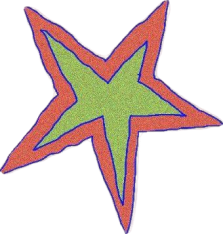
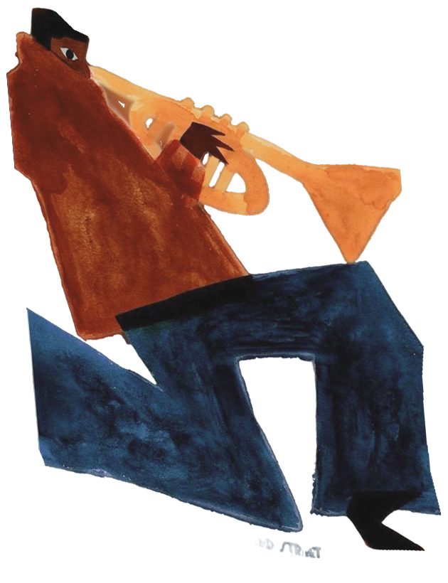
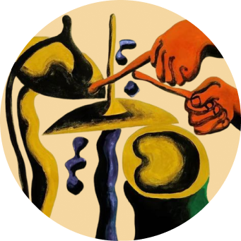
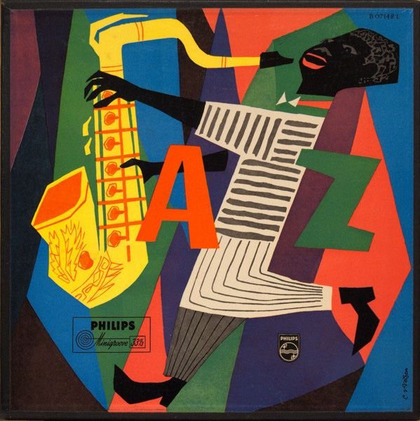
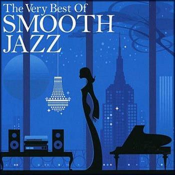
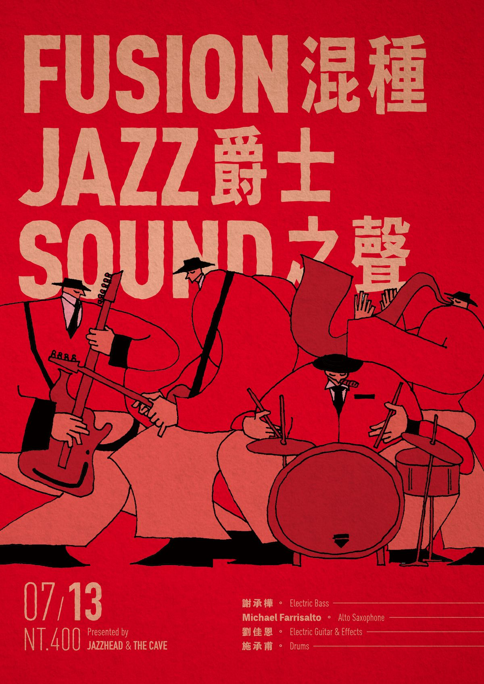
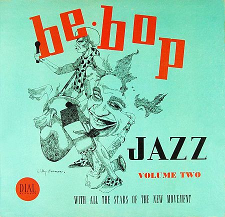
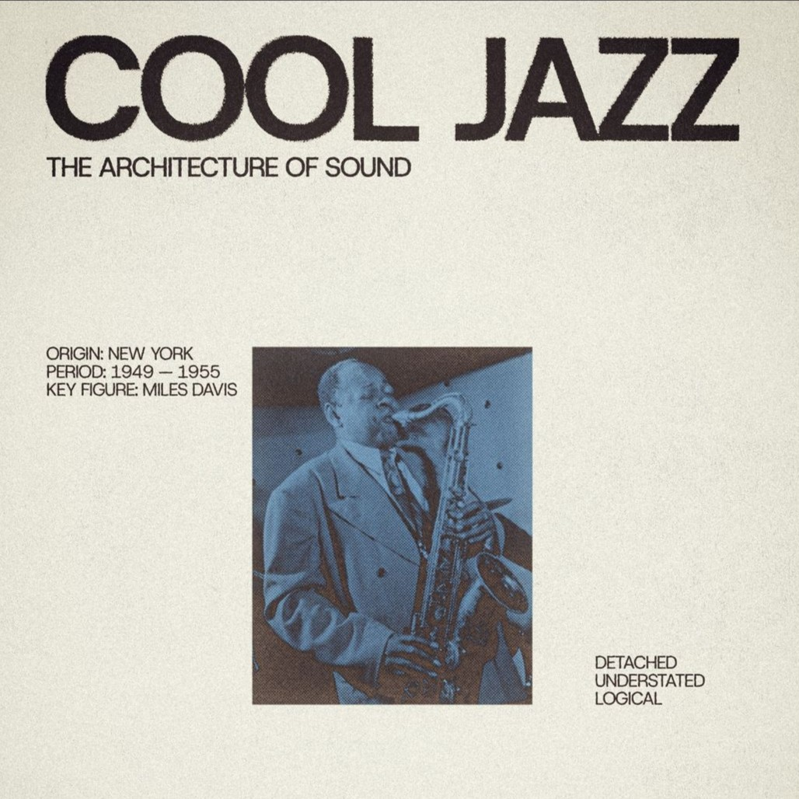
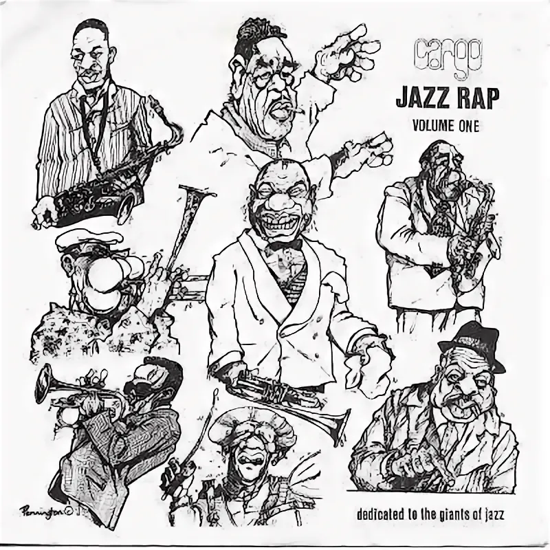

Джаз зародился в США, в городе Новый Орлеан, в начале XX века. Его корни уходят в Западную Африку, где местные музыканты создавали сложные ритмические структуры с обилием ударных. Сплав африканских ритмов, европейской гармонии и американской души породил музыку, которая изменила мир.
Со временем джаз породил множество субжанров — от камерного диксиленда до экспериментального фьюжна. Каждый стиль — это отражение своей эпохи и новый шаг в эволюции жанра.

Этот стиль вобрал в себя фанк, соул и диско. Кислотный джаз узнаётся по грувовым битам, запоминающимся мелодиям и импровизации. Он создаёт энергичную, танцевальную атмосферу.

Одним из важнейших треков, повлиявших на развитие направления, стала композиция «Never Stop» группы The Brand New Heavies и задала стандарт звучания для многих последователей acid jazz
Название говорит само за себя. Smooth Jazz нацелен на создание расслабленной, уютной атмосферы. Мягкое звучание, лирические соло, спокойные ритмы и влияние поп-музыки и R&B. Это наиболее коммерческий вариант джаза, который часто звучит в кафе и плейлистах для работы. Но у него есть своё достоинство — доступность и способность привлечь нового слушателя.

Джордж Бенсон - гитарист и вокалист, который смешал в своей музыке влияние джаза, поп-музыки и R & B, создав смус-джаз хиты, например "Breezin'"
Слияние джаза с роком, фанком и электроникой. Пик популярности фьюжна пришёлся на 1960–70-е. Музыканты активно использовали электрогитары, синтезаторы, усилили бас и ритм-секцию. Звук стал более агрессивным и плотным, но джазовая гармония и импровизация никуда не делись. Фьюжн — мост между интеллектуальным джазом и энергией рок-сцены.

"Shhh" - песня джазового трубача Майлза Дэвиса. это первый трек с его альбома 1969 года"In a Silent Way". песня часто используется в паре с этим треком,"Peaceful".
Бибоп возник как реакция на слишком предсказуемые и танцевальные стили джаза. Молодые музыканты хотели играть для себя и для знающих слушателей. Отсюда — бешеный темп, сложные мелодические линии, максимальная импровизация. Бибоп напоминает спортивное состязание: исполнители словно соревнуются, кто быстрее и изобретательнее обыграет гармонию. Это джаз для музыкантов, а не для танцпола.

"Бибоп" Чарли Паркера - это значительная и влиятельная джазовая композиция, которая помогла определить жанр бибопа. Чарли Паркер, также известный как "Берд", был известным саксофонистом и одним из главных новаторов бибоп-музыки.
Кул-джаз возник в конце 1940-х годов как реакция на быструю и сложную природу бибопа. Для него характерно мягкое и непринужденное звучание, часто с более мягкими тонами и медленным темпом. Такие артисты, как Майлз Дэвис и Чет Бейкер, были пионерами этого поджанра, создавая музыку, которая была плавной, утонченной и идеально подходила для позднего прослушивания.

"Birth of the Cool" считается важной вехой в развитии кул-джаза, поджанра джаза, отличающегося более расслабленным и сдержанным подходом. В этом альбоме инновационные аранжировки и уникальное ансамблевое звучание.
Этот субжанр объединяет ритмический рисунок рэпа и импровизационную природу джаза. Живые инструменты (саксофон, труба, контрабас) соседствуют с речитативом, часто на социальные или философские темы. В 1990-е годы этот стиль развивали Guru (проект Jazzmatazz), A Tribe Called Quest, Digable Planets.

Но традиция жива и сегодня. Один из самых ярких современных примеров — творчество Кендрика Ламара. Его альбомы «To Pimp a Butterfly» (2015), «Untitled Unmastered » (2016) и «Mr. Morale & the Big Steppers» (2022) насыщены живыми джазовыми аранжировками, приглашёнными инструменталистами и прямыми отсылками к джазовой эстетике. Ламар не просто использует сэмплы — он воссоздаёт живую джазовую атмосферу, на которую накладывает сложную ритмику рэпа.
Каждый из перечисленных субжанров обладает своим лицом, но всех их объединяет главное — дух творческого поиска и импровизации. В онлайн-школе «Музыка для каждого» мы на конкретных примерах разбираем, как менялся джаз на протяжении столетия. Если остались вопросы или хотите получить подборку треков для самостоятельного анализа — обращайтесь. И не бойтесь исследовать.